Absolute power normalization in TolTEC drive-fit commit
Technical note · 21 October 2026
Abstract
Drive-fit commit converts independently selected resonator drive levels into
a single tone comb and a common attenuation. This conversion requires an
absolute normalization as well as the correct ratios between tone amplitudes.
We show that the v2 prescription, inherited by the initial v3 implementation,
omits the change in the sum of squared comb amplitudes under the fixed total
DAC power model used by RoachTonePower. The required attenuation is the
negative logarithm of the summed requested fractional powers. Applying this
expression to a seven-sweep TolTEC reference sequence reduces the predicted
power excess from 2.103, 0.984 and 0.788 dB to 0.103, 0.234 and 0.038 dB for
networks 0, 7 and 11, respectively. The residuals follow from retaining
downward quantization in 0.25 dB steps. The fitted drive levels and relative
emitted amplitudes are unchanged. A calculation using recorded tone phases
also demonstrates the limit of this result: Tlaloc fixes the waveform peak,
and changes in crest factor leave an additional residual that the fixed total
power approximation does not describe.
1. Introduction
A drive-fit sequence samples the resonator response at several values of the common drive attenuation. The resulting fit assigns a preferred attenuation to each channel. Those preferences cannot be applied independently to the hardware attenuator. Instead, commit must construct a new set of relative tone amplitudes and choose one common attenuation such that the individual tones reproduce their selected powers.
Correct amplitude ratios determine the ratios of tone powers, but do not
determine their common scale. In particular, normalizing the largest amplitude
to unity does not determine the total power of a multitone waveform. The
question addressed here is whether the commit attenuation is consistent with
the power distribution assumed by the existing RoachTonePower model [1].
We first derive the normalization within that model and identify the missing term in the earlier recipe [2]. We then evaluate the change on a compact initialization sequence covering one network in each TolTEC array, with a longer calibration sequence as an additional check. Finally, we compare the fixed total power prediction with the waveform normalization implemented by Tlaloc [3]. These are calculations from recorded sweeps; no post-commit power measurement is available in this comparison.
2. Power model and attenuation solution
2.1. Reference and output combs
Let
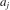
denote the nonnegative amplitude of emitted reference tone . Under the fixed total DAC power approximation, its fractional power is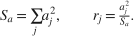
(1)The sum includes the entire emitted reference comb, including tones that are not selected for fitting or subsequently matched to the output. Here and below, a tone means a distinct active DAC frequency bin. Masked bins do not contribute. If several input rows address the same bin, Tlaloc retains the last assignment; the emitted amplitude is that of the controlling row [3]. Counting overwritten rows as additional emitted tones gives an incorrect denominator.
Let identify the reference tone matched to output tone , and let
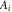
be its selected attenuation in dB, after filling rejected fits and applying the percentile cutoff. The desired power, expressed as a fraction of the reference total DAC power, is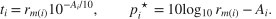
(2)The logarithmic quantity
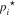
refers to the drive-attenuator output, relative to total DAC power. It is not an absolute detector-input power in dBm; downstream losses and an absolute power calibration are not included. For output coefficients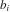
and common attenuation , the same model predicts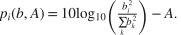
(3)All logarithmic powers in this note are in dB. Equation (3) is the v2 per-tone DAC power expression [1], with the common drive attenuation subtracted and the arbitrary total-power offset removed.
2.2. The absolute normalization
Correct relative powers require to be proportional to
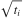
. Writing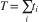
and choosing the conventional maximum amplitude of unity gives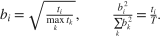
(4)Substitution into equation (3) yields
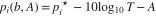
. Thus all requested powers are recovered simultaneously by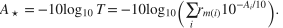
(5)The reference denominator in equation (1) and the output sum in equation (5) have different roles. The former defines each tone's power during the reference measurement; the latter is the total power requested for the new comb. The solution therefore permits different reference and output tone counts. It must not renormalize the reference fractions over only the matched subset. Multiple output rows sharing one DAC bin can represent only one emitted power; conflicting requests for that bin have no simultaneous solution. A passive attenuator also requires
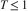
; a larger requested total cannot be realized by attenuation alone.2.3. Missing term in the earlier prescription
For a common reference and output tone set, write
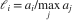
. With percentile reference attenuation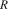
, the earlier recipe [2] computes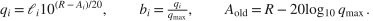
(6)These expressions precede attenuation quantization. The relative coefficients agree with equation (4), but the attenuation compensates only for the maximum coefficient. Combining equations (5) and (6) gives the omitted term explicitly:
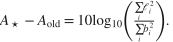
(7)The percentile reference cancels from the normalization, although the cutoff still affects the selected values . Equation (7) explains why a change in amplitude distribution generally requires a change in common attenuation even when the largest coefficient remains unity. The sign and magnitude depend on the comb; the correction is not a universal additive offset.
As an analytic example, consider two equal reference tones with requested attenuations of 10 and 20 dB and no cutoff. Both prescriptions give
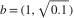
. The earlier attenuation is 10 dB, whereas the requested total fractional power is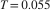
, giving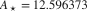
dB. The earlier setting therefore exceeds both requested tone powers by 2.596373 dB. This discrepancy follows without specifying the absolute DAC power.2.4. Attenuation quantization
Retaining the existing downward rounding with step
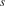
gives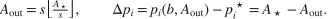
(8)The residual is common to all emitted tones and satisfies
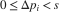
. For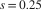
dB, the two-tone example gives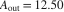
dB and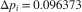
dB. This bound follows from the chosen rounding rule within the fixed total power model; it is not a bound on instrumental or fitted-power uncertainty. Nearest-step rounding would address a different objective. The present calculation retains the configured rule and percentile cutoff.3. Reference observations and numerical methods
The primary data are the 2025 October 31 initialization sequence, observation 145484, subobservations 1–7, scan 1. The seven target sweeps span drive attenuations of 4–16 dB in 2 dB increments. Commit is evaluated against the standalone target sweep 145485/0/1. The three networks contain 1,493 channels in total, with one distinct emitted DAC bin per channel. The output uses the target's input-probe ordering; no intervening finding operation or tone-list replacement is introduced.
Table 1. Channel populations in the compact reference sequence. “Cutoff” counts accepted selections whose attenuation is increased to the tenth percentile. Filled channels receive the median accepted attenuation.
| Network | Array | Channels | Accepted | Filled | Cutoff |
|---|---|---|---|---|---|
| 0 | a1100 | 632 | 505 | 127 | 48 |
| 7 | a1400 | 389 | 245 | 144 | 25 |
| 11 | a2000 | 472 | 24 | 448 | 3 |
The fit uses a_ref=0.2 and weight_window_Qr=12000. Commit retains
adrv_max=30 dB, median filling, a tenth-percentile lower cutoff on selected
attenuation, and dB. Filled values are assigned operating levels,
not independently determined resonator optima. In particular, only 24 of the
472 network-11 channels have accepted selections (Table 1); the normalization
calculation does not improve this acceptance rate.
The two workflow runs differ in their commit normalization. The nonlinear
fit, tone matching, filling and cutoff calculations are held fixed. Power
residuals are evaluated independently by executing the original v2
RoachTonePower.P_dac_dbm_per_tone expression on the emitted reference and
output combs [1, 4]. The same arbitrary total DAC power is used in both,
so it cancels in the difference. Positive residuals mean excess output power
relative to equation (2). These are deterministic forward calculations,
not estimates of measurement scatter.
The baseline is the initial v3 fit and commit applied to these data, isolating the attenuation change. It does not assert complete v2 fit parity: a previously identified difference between the measured LO midpoint and the header LO value affects the network-11 v2/v3 fit comparison. The LO convention and the fit kernel are held unchanged here.
For an additional check, we use the 31-sweep, network-0 calibration ICS 17068 from 2022 December 11. Its 685 channel rows occupy 654 distinct DAC bins. The 31 overwritten rows provide a case in which row count and emitted-tone count differ.
4. Results
4.1. Compact initialization sequence
Table 2 gives the previous attenuation, the continuous solution from equation (5), and the quantized setting. The correction increases the written attenuation by 2.00, 0.75 and 0.75 dB for networks 0, 7 and 11. Because the relative coefficients are unchanged, these changes reduce every tone's predicted power in the corresponding network by the same amount.
Table 2. Attenuation settings and fixed total power residuals for the compact reference. All entries are in dB. Residuals are evaluated after quantization; displayed precision describes the numerical calculation, not instrumental accuracy.
| Network | Previous | 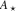 |
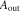 |
Previous 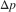 |
Corrected |
|---|---|---|---|---|---|
| 0 | 6.25 | 8.352639 | 8.25 | +2.102639 | +0.102639 |
| 7 | 7.00 | 7.983699 | 7.75 | +0.983699 | +0.233699 |
| 11 | 12.00 | 12.787755 | 12.75 | +0.787755 | +0.037755 |
The residuals all lie within the interval predicted by equation (8) (Figure 1a). Every pre-existing fit data array, including selected attenuation and flags, is exactly equal between runs. Match indices, frequency residuals, filled attenuations and cutoff decisions are also equal. The largest change in an output amplitude coefficient is
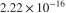
, consistent with floating-point rounding. The independent forward calculation agrees with the stored per-tone power diagnostics to within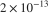
dB.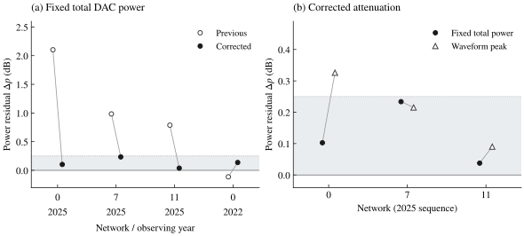
4.2. Historical calibration and quantization
For ICS 17068, equation (5) gives
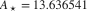
dB. The written attenuation changes from 13.75 to 13.50 dB, and the fixed total power residual changes from −0.113459 to +0.136541 dB. In this case, the magnitude of the quantized residual becomes slightly larger: the previous setting happened to be closer to the continuous solution. A correct continuous normalization followed by downward rounding therefore need not improve the absolute residual for every comb.The 483 accepted selections, 202 filled values and 49 cutoff-limited selections are unchanged. Coefficients controlling emitted DAC bins agree within . Overwritten entries differ by up to 0.0045853, because their recorded power fractions now refer to the controlling bin; these entries do not alter the synthesized waveform. No tone-phase headers are recorded in this sequence, so an equivalent waveform calculation is not available.
5. Waveform normalization and physical interpretation
The fixed total power model is not identical to the DAC synthesis procedure. Tlaloc constructs a complex waveform by inverse FFT and divides both I and Q by its maximum complex magnitude [3]. It therefore fixes the waveform peak. Redistributing amplitudes can change the peak-to-RMS ratio, or crest factor, and hence change the total power even when the peak remains fixed.
Let
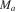
and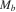
be the maximum complex magnitudes of the unnormalized reference and output waveforms, respectively. With the same inverse-FFT convention in both, the residual relative to the selected reference power is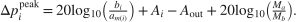
(9)Writing
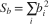
, the difference from the fixed total power prediction is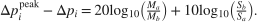
(10)This is the change associated with the two combs' crest factors. It is common to the tones in this calculation, but depends on amplitudes, phases and frequency-bin placement. It cannot in general be inferred from the largest tone amplitude alone.
Every sweep in the compact reference has recorded phases, which are constant over the seven fitted drive levels within each network. Equation (9) is evaluated using the recorded frequency bins and phases, assuming that commit retains the target sweep's phases and masks. Table 3 and Figure 1b give the result.
Table 3. Power residuals under waveform-peak normalization. The last column is the corrected waveform residual minus the corrected fixed total power residual. All values are in dB and are conditional predictions from recorded waveform parameters.
| Network | Previous 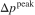 |
Corrected | Crest-factor contribution |
|---|---|---|---|
| 0 | +2.326037 | +0.326037 | +0.223397 |
| 7 | +0.965043 | +0.215043 | −0.018656 |
| 11 | +0.840251 | +0.090251 | +0.052496 |
The attenuation correction reduces the waveform-model residual in all three networks, but does not eliminate it. Network 0 retains a 0.326 dB excess, larger than one attenuation step, despite satisfying the fixed total power bound. This is consistent with the 0.223 dB crest-factor contribution in equation (10), added to the 0.103 dB quantization residual.
These results establish consistency with a specified power model, rather than an absolute calibration of resonator power. The accepted drive levels themselves have fitting uncertainty, filled channels lack accepted optima, and the waveform calculation assumes the recorded phases and masks are retained. A post-commit measurement would be needed to assess actual power recovery, including analog-chain effects. Neither the model residuals nor the number of computed digits supplies that measurement uncertainty.
6. Conclusions
Under the fixed total DAC power approximation, the common attenuation is determined by the sum of the requested fractional tone powers. Normalization by the largest amplitude gives the correct relative comb but omits the sum-of-squares term required for the absolute power scale. The corrected expression leaves the fitted drive levels and emitted relative amplitudes unchanged and reduces the compact reference's power discrepancies to the residual imposed by the retained attenuation quantization.
Two qualifications matter. Downward rounding does not minimize absolute error for every comb, as the historical calibration illustrates. In addition, Tlaloc's peak-normalized waveform introduces a crest-factor term beyond the fixed total power approximation. The present correction resolves the attenuation calculation within that approximation; the waveform calculation quantifies the remaining model dependence for the available reference data.
Appendix A. Computational record
V3 stores each fitted channel's reference power_fraction using the complete
acquired comb. This makes equation (5) reproducible when only a subset of
channels is fitted or later matched. Fit products lacking these fractions
must be regenerated. The commit product records atten_drive_exact and the
per-tone quantities power_policy_db, power_commit_db and power_error_db.
The output amplitude file is a replacement vector in target input-probe
order, not a further multiplication by the target input amplitudes. The
existing Tlaloc file contract is retained.
The comparison uses the initial v3 products in run/drive-fit-full-20261021/
and corrected products in run/drive-fit-normalization-20261021/. The latter
directory contains the exact workflow configurations, product manifests,
per-channel ECSV comparisons and JSON summaries. The comparison program
evaluates the original forward model independently of the attenuation solver.
Analytic and numerical checks include the two-tone example, invariance to
common amplitude scaling, changed tone counts, channel subsets, masking and
repeated DAC bins. Implementation validation and source hashes are recorded
in provenance.json.
The manuscript renderer
typesets this note and generates Figure 1 from the saved numerical comparisons.
The calculation describes the TolTECA working tree based on revision
542c86a0a955edaa4a293521c55a18221952cbb1, including the uncommitted v3 port.
The recipe reference is taco_recipes revision
c9e73647f8096cda48485a9f551eef5cfb467a48; the fit reference is
kid_phase_fit revision 4f4c9a71e51d88e41980c5932bd973722a6906a0.
No live instrument settings were installed for this comparison.
References
- TolTECA v2,
tolteca_kids/roach_tone_power.py,RoachTonePower.P_dac_dbm_per_tone. Local production source; SHA-256605d1bf054fc0b497a92b44c1e540ad068557e3593ade2c2a2eae323b1fd51e1. taco_recipes,scripts/drivefit/dispatch_drivefit.py,DriveFitCommit.compute_ampcor; revision given in Appendix A.- Tlaloc,
src/ToltecRoachManager.cc,dac_comb. Local C++ source for frequency quantization, masking, bin assignment and common complex-waveform peak normalization; source hash in provenance.json. - Drive-fit normalization comparison program and preceding power audit. The workflow specification records the operational contract.